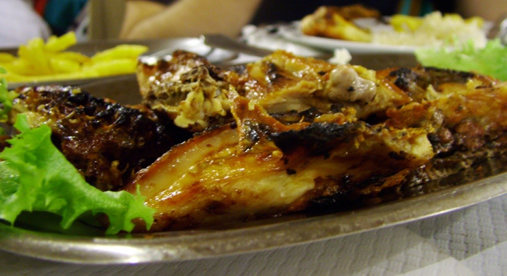

Fotografias ilustrativas — no site final usamos as vossas.
Churrasqueira (take-away) · Guimarães
Frango de churrasco para a sua mesa
Almoço ou jantar de família, pronto para a mesa lá de casa.
Mande a encomenda e recolha quando estiver pronta.
Na Avenida São Gonçalo, em Guimarães.
O Frangão é uma churrasqueira de take-away na Avenida São Gonçalo, em Guimarães. Escolha o que lhe apetece, encomende por WhatsApp e passe só para recolher.

Fotografias ilustrativas — no site final usamos as vossas.
Encomenda
Diga o que precisa e quando quer levantar (ou receber). Respondemos por WhatsApp.
↑ Assim chegaria a mensagem ao vosso WhatsApp. (Nesta demonstração nada é enviado.)
Onde estamos
Proposta para O Frangão
Esta página foi feita de propósito para O Frangão por João Machado, programador web aqui de Guimarães. Inclui:
Eu trato do alojamento e da manutenção. Sem compromisso.